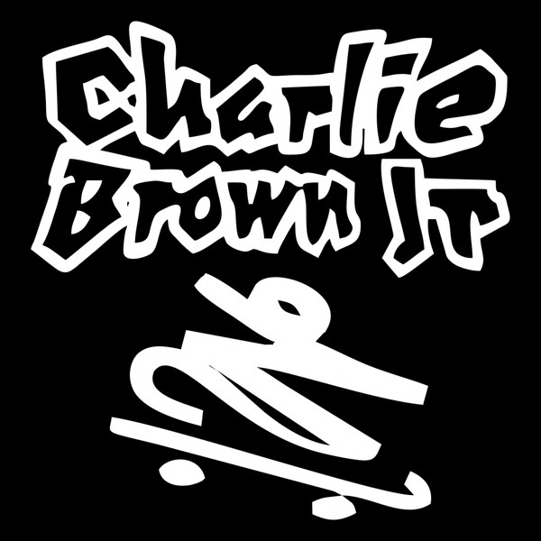

História da Banda

A banda Charlie Brown Jr. surgiu em 1992 na cidade de Santos, em São Paulo. Fundada por Chorão, o grupo misturava rock, rap, reagge e skate punk, criando um estilo único que marcou gerações.
Com letras que falavam sobre amizade, superação, críticas socias e vivências da juventude, a banda conquistou rapidamente o Brasil. A atitude skatista sempre esteve presente, tanto na estética quanto na mensagem transmitida na músicas.
Ao longo dos anos, a banda lançou diversos sucesso que tornaram verdadeiros hinos para os fãs. Charlie Brown Jr. se consolidou como uma das maiores banda de rock nacional.